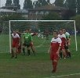
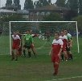

Kingston & District Football League


 

Minutes of Management Committee meeting - 25 August 2015
Meeting opened: 19.02.
Present: Mike Hallett (Chair) Andy Brown David Christmas Janet Ford Frank Gardner Maurice Gilley Jim Lee Darren O'Connell Brian Smith Maurice Webb
Apologies for absence: Lew Block Mark Giles Malcolm Hall Dave Short
1. Chairmans's Report. 1.1. Discussion on trophy repairs and whether or not money should be spent on them. 1.2. Brian Smith explained why there may be discrepancies on accounts at the EGM this evening. 1.3. Mike Hallett thanked Maurice Gilley for his recent donations to the KDFL.
2. Secretary's Report. 2.1. Discussion rearding donations for Ken Tate and profits from Teck Cup finals. 2.2. Invoice still not received from Molesey FC in respect of KDFL Cup Finals. As per item 3.1. on minutes of 16 June. 2.3. Ewell Saxons FC now withdrawn from KDFL. Their place, in Div. 2, is taken by Kew Park Rangers FC. 2.4. Handbook amendment required by Surrey County FA regarding misconduct and KDFL Rule 17(e). KDFL will notify Surrey County FA if problems with any club. 2.5. Janet Ford reported that some clubs were having problems affiliating on-line.
3. Treasurer. 3.1. There were 2 Premium Bond wins. 3.2. Bank accounts had been changed on order to receive higher interest rates. 3.3. Presentation Night profits of £445.75. 3.4. Brian Smith detailed clubs who yet to pay league fees for 2015/6 season. Clubs would be give until 31 August to pay or they would not be able to play matches. There was a discussion on sanctions available to the KDFL and Janet Ford would speak to Surrey County FA for clarification. 3.7. Brian Smith reported the sums in the Current and Deposit accounts and the Guarantee and 125th Anniversary funds.
4. Fixtures. 4.1. Fixtures, Cup Draws and Handbook changes have been printed out.
5. Referees. 5.1. 15 referees had been lost to other leagues. 5.2. There are 6 new referees but all are inexperienced. Jim Lee agreed to attend some of their matches.
6. Registrations. 6.1. Registration Forms sent out. These will also be on website for clubs to print themselves. 6.2. List of players suspended sine die received from Surrey County FA.
7. Trophies. 7.1. Brian Smith reported on purchase of trophies. Discussion followed.
8. Other Business. 8.1. Maurice Gilley had noted, that in a recent match, Rygas FC playing in black shirts.
Meeting closed: 20.18.
Minutes of Extraordinary General Meeeting - 25 August 2015
Meeting opened: 20.33
Present: Mike Hallett (Chair) Andy Brown David Christmas Janet Ford Frank Gardner Maurice Gilley Jim Lee Darren O'Connell Brian Smith Maurice Webb
Apologies for absence: Lew Block Mark Giles Malcolm Hall Dave Short Lower Green FC
Meeting called to approve accounts for the 2014/15 season. Though first there was a tribute for Ken Tate from Frank Gardner and this was followed by a minutes silence.
Brian Smith detailed figures on the accounts and explained why they were still in draft format.
Costs for KDFL cup finals could only be estimated because invoice had not yet been received from Molesey FC.
The accounts were proposed by Kingston Albion FC, seconded by AFC North Leatherhead and carried unanimously.
Meeting closed: 20.37.
Minutes of General Meeeting - 25 August 2015
Meeting opened: 20.38
Present: Mike Hallett (Chair) Andy Brown David Christmas Janet Ford Frank Gardner Maurice Gilley Jim Lee Darren O'Connell Brian Smith Maurice Webb
Apologies for absence: Lew Block Mark Giles Malcolm Hall Dave Short Lower Green FC
1. Chairmans's Report. 1.1. Mike Hallett explained the position regarding both KDFL and FA ruless on payment of league fees.
2. Secretary's Report. 2.1. Dates of General Meetings for 2015/16 season read out. 2.2. Ewell Saxons FC have now withdrawn from KDFL. 2.3. League handbooks had been distributed to clubs; though in some pages (page 29) were missing. 2.4. Clubs were asked if changes needed to be made in respect of their clubs' entries.
3. Treasurer's Report. 3.1. Brian Smith announced that, in accordance with KDFL rules, clubs had until midnight to pay KDFL fees for 2015/16 season.
4. Fixtures 4.1. Printed fixtures, KDFL cup draws and handbook changes were available. 4.2. Maurice Webb explained rules regarding the 'phoning in of results. Home clubs in KDFL matches and home & away clubs in county cup matches to 'phone in result by 19.00. on day of match.
5. Referees. 5.1. David Christmas reminded clubs, when they were at home, to contact their referee by the Monday before the match. 5.2. Referees for matches on 5/9/16 and 12/9/16 had now been allocated.
6. Registrations. 6.1. Maurice Gilley reminded clubs, that in accordance with KDFL rules, Player registraions need to be completed on the Thursday before the match in question; though it would be appreciated if they were earlier. 6.2. Clubs should check Surrey County FA list of players suspended sine die before registering new players.
7. Other Business. 7.1. Mike Hallett reported that new members were needed for the KDFL committee and explained the importance of attending the General Meetings. 7.2. Andy Brown asked for team photo's of succesful teams in the 2014/15 season. This would be subject to permission from whoever had the copyright. Also Player Registration forms and Match cards could now be downloaded from the website.
Meeting closed: 21.12.